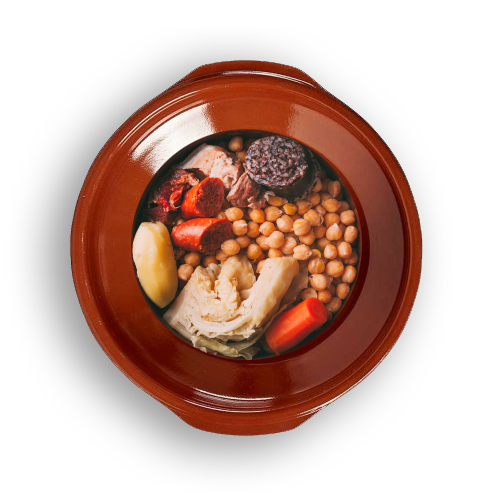
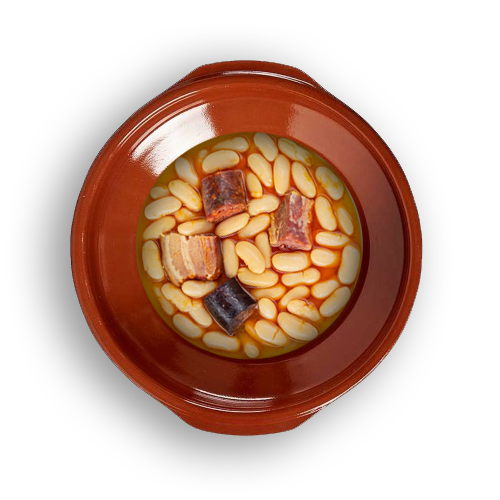
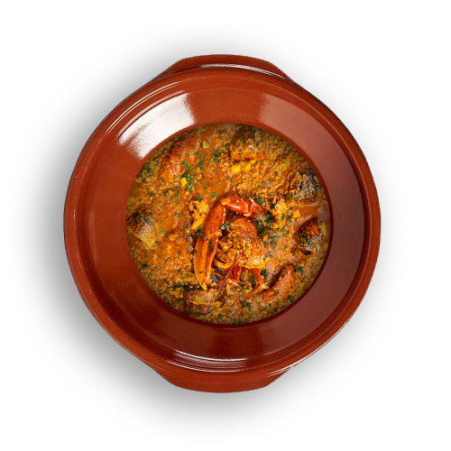
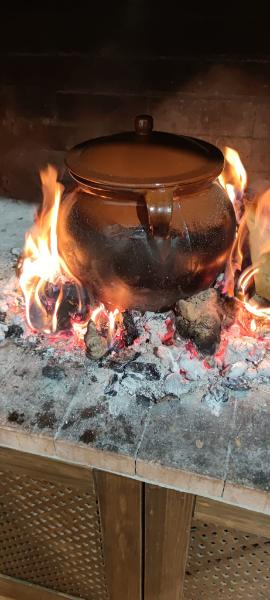
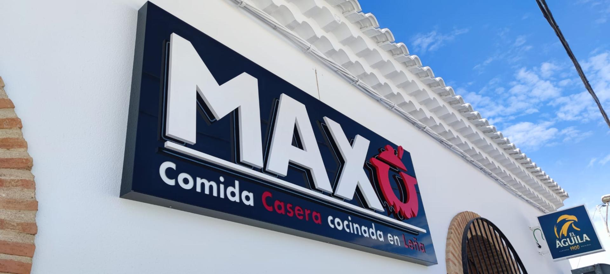
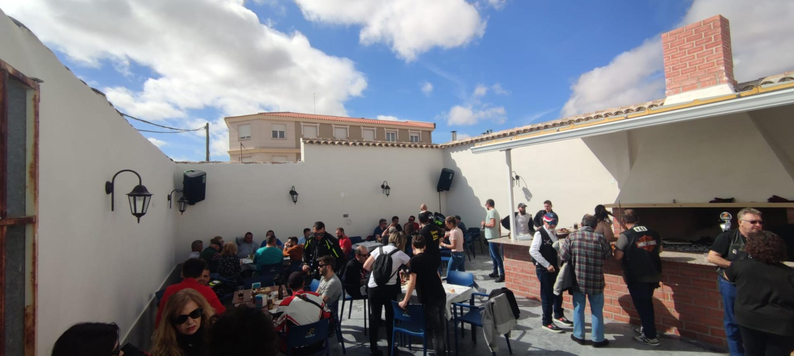
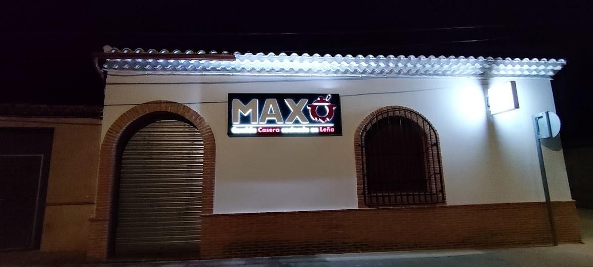

Cocido en olla de barro
Siete horas al fuego de leña. La carne tierna, la verdura suave y ese ahumado que solo da la leña.
Encargar cocidoBar-restaurante en Pedro Muñoz, Ciudad Real. Cocido de siete horas en olla de barro, menú de 15 € y 41 vinos, todos los días.
Reservar mesa o llama al 617 69 97 56
Siete horas al fuego de leña. La carne tierna, la verdura suave y ese ahumado que solo da la leña.
Encargar cocido
Fabes, compango y fuego lento. Cada ingrediente se funde con el humo de la leña.
Encargar fabada
De marisco, de carne o de bogavante nacional. Por encargo, para comer aquí o para llevar.
Encargar arroz
Los guisos de olla van por encargo. Recoges en la calle Paloma o te sentamos en la terraza.
Pedidos: 926 82 15 30Maxó es un bar de pueblo con cocina de leña: café desde primera hora, tapeo con cerveza fría, menú a mediodía y guisos de olla de barro por encargo.
Dentro, un comedor tranquilo. Fuera, una terraza grande con barbacoa de obra, donde caben la familia, la peña y los grupos de moteros.


En las reseñas repiten la comida increíble, el trato del dueño, la terraza grande y los alones.
